Algorithmus (mwtest)
Betrachten Sie die zwei unabhängigen Beispiele
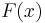
und 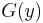
mit der Größe  und
und  . Die Beispieldaten werden als
. Die Beispieldaten werden als 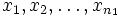
bzw. 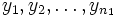
bezeichnet.
Die Nullhypothese
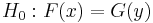
lautet, dass die zwei Verteilungen gleich sind. Dies wird gegen die Alternativhypothese 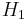
getestet, die besagt:
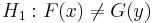
; oder
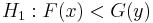
, die 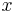
tendieren dazu, größer zu sein als die 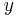
; oder
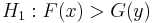
, die tendieren dazu, kleiner zu sein als die .
Das Testverfahren beinhaltet die folgenden Schritte:
- Kombinieren Sie
 und
und 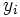
in einer Gruppe.
- Ordnen Sie die Ränge in aufsteigender Ordnung. Verbindungen erhalten den Durchschnitt ihrer Ränge. Angenommen
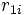
sind die Ränge, die zugewiesen sind, für 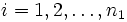
, und die Ränge, die zugewiesen sind, für 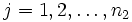
.
- Berechnen Sie die Summe der Ränge:
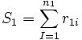
, und 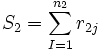
- Die Teststatistik
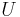
wird folgendermaßen definiert:
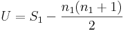
- Die approximative Teststatistik der Normalverteilung
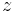
wird berechnet wie folgt:
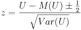
wobei
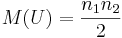
und
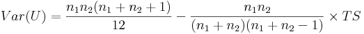
wobei
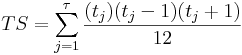
sein wird.
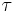
ist die Anzahl der Verbindungen in der Stichprobe und 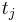
die Anzahl der Verbindungen in der j-ten Gruppe.
Beachten Sie, dass, sollte es keine Verbindungen geben, die Varianz von reduziert wird auf 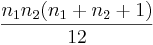
Weitere Einzelheiten zu dem Algorithmus finden Sie unter nag_mann_whitney (g08amc).